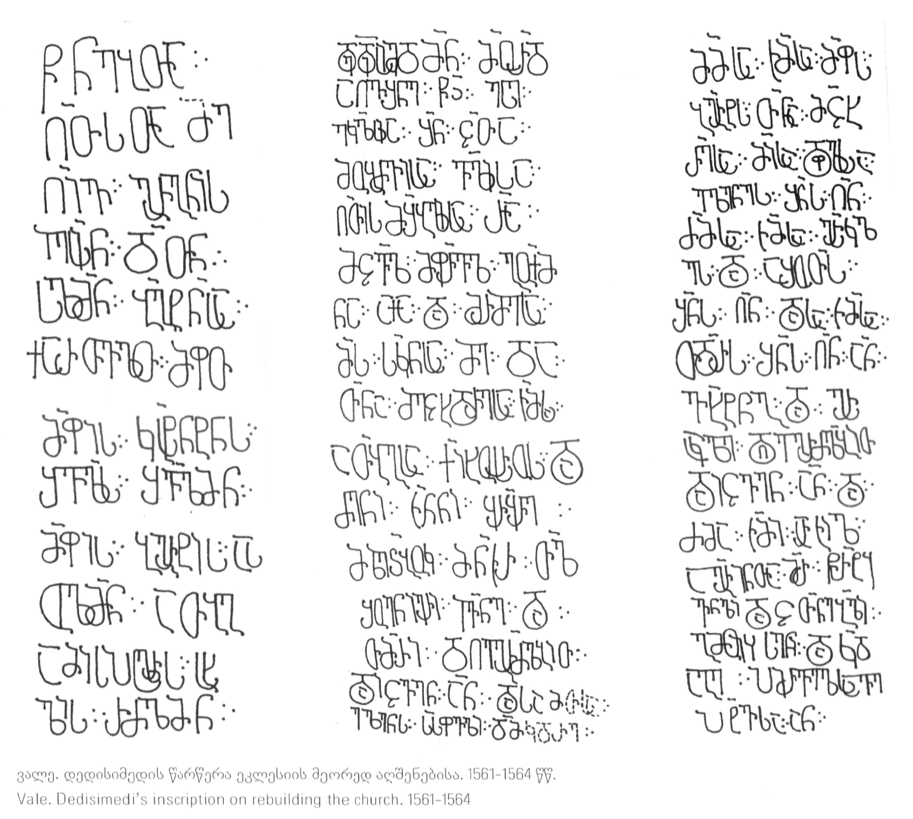

ვალეს დედისიმედის წარწერა (ყველაზე დიდი ეპიგრაფიკული ძეგლი საქართველოში)
შინაარსი / Summary
მოსახსენებელი
ბიბლიოგრაფია Bibliography
კრიტიკული გამოცემა Interpretive Edition
† ნებ(ი)თა
ღ(მრ)თ(ი)ს(ა)თა მე
ღ(მრთ)ივგ(უი)რგ(უი)ნ(ოსნ)ის
5ს(ო)(ო)(ონია)ბ(ა)გ(რა)ტ(ოა)ნ(ი)სა
ქართვ(ე)ლთ მ(ე)ფ(ე)თ
მ(ე)ფისკ(ო)სტ(ა)ნტ(ი)ნ(ე)ს
შვ(ი)ლ(ი)სშვ(ი)ლმ(ა)ნ
მ(ე)ფის ბ(ა)გრ(ა)ტის ას -
10ულმ(ა)ნ ათ(ა)ბ(ა)გ
ამი(რ)სპ(ა)ს(ა)ლ(ა)რ(ი)ს ს(ა)ხ -
ლის რძ(ა)ლმ(ა)ნ
დედ(ი)სიმ(ე)დმ(ა)ნ მ(ე)ორ(ე)დ
აღვ(ა)შ(ე)ნე წ(მიდა)ჲ ესე
ეკლ(ე)სია შ(ე)ნ ც(ა)თა
მობაძ(ა)ვისა ვ(ა)ლისა
5ღ(მრ)თისმშ(ო)ბ(ე)ლისა რ(ათ)ა
მცვ(ე)ლ მფ(ა)რვ(ე)ლ გუ(ე)ქმ -
ნა აქა და მ(ე)რმესა
მ(ა)ს ს(აუ)კ(უ)ნ(ე)სა მე და
თ(ა)ნამეცხ(ე)დრესა ჩ(ე)მსა
ძენი ჩ(უე)ნნი ყ(ვა)რყ(ვა)რე
მზეჭ(ა)ბუკ მ(ა)ნ(უ)ჩ(ა)რ თ(უა)ლ -
შუენიერი ივ(ა)ნე და
თ(ა)მ(ა)რი დღეგრძ(ე)ლობით
15დაიცვენ ა(მე)ნ დასა მ(ა)თსა
ელენ(ე)ს ს(ა)(უ)(ე)(ე) დ(აუ)მკ(ვი)დრე
მ(ა)მ(ა)სა ჩ(ე)მსა მ(ე)ფ(ე)ს
ბ(ა)გრ(ა)ტს თ(ა)ნამ(ე)ცხ(ედ)რესა მი(ს)სა დ(ედო)ფ(ა)ლსა
ელენეს შ(ეუ)ნ(დო)ს ღ(მერთმა)ნ
5ძმ(ა)სა ჩ(ე)მსა ჰ(ე)რ(ა)კლ -
ეს და აშოთ(ან)ს
შ(ეუ)ნ(დო)ს ღ(მერთმა)ნ დასა ჩ(ე)მსა
თ(ეო)დ(ო)რ(ა)ს შ(ეუ)ნ(დო)ს ღ(მერთმა)ნ ა(მე)ნ
ვ(ა)ხტ(ა)ნგ და ჰ(ე)რ -
10აკლე დღეგრ(ძელო)ბით
დაიცვენ ა(მე)ნ და
ძმა ჩ(ე)მი არჩილ
აგ(ა)რი(ა)ნთა მ(იე)რ წ(ა)რტყ -
ვ(ე)ნ(ი)ლი და ცთ(უ)ნებ(უ)ლი
15გ(ა)მოიჴსენი და კ(უალა)დ
აგე პირველსავე
პატ(ი)ვსა ა(მე)ნ
დიპლომატიური გამოცემა Diplomatic Edition
† ႬႤႡႧႠ
ႶႧႱႧႠ ႫႤ
ႶႨႥႢႰႢႬႨႱ
ႨႤႱႨႬ ႣႥႧႬ
5ႱႡႢႲႬႱႠ
ႵႠႰႧႥႪႧ ႫႴႧ
ႫႴႨႱႩႱႲႬႲႬႱ
ႸႥႪႱႸႥႪႫႬ
ႫႴႨႱ ႡႢႰႲႨႱ ႠႱ
10ႳႪႫႬ ႠႧႡႢ
ႠႫႨႱႮႱႪႰႱ ႱႾ
ႪႨႱ ႰႻႪႫႬ
ႣႤႣႱႨႫႣႫႬ ႫႭႰႣ
ႠႶႥႸႬႤ ႼჂ ႤႱႤ
ႤႩႪႱႨႠ ႸႬ ႺႧႠ
ႫႭႡႠႻႥႨႱႠ ႥႪႨႱႠ
5ႶႧႨႱႫႸႡႪႨႱႠ ႰႠ
ႫႺႥႪ ႫႴႰႥႪ ႢႳႵႫ
ႬႠ ႠႵႠ ႣႠ ႫႰႫႤႱႠ
ႫႱ ႱႩႬႱႠ ႫႤ ႣႠ
ႧႬႠႫႤႺႾႣႰႤႱႠ ႹႫႱႠ
10ႠႧႡႢႱႠႵႨႾႭႱႰႱ ႣႠ
ႻႤႬႨ ႹႬႬႨ ႷႰႷႰႤ
ႫႦႤႽႡႳႩ ႫႬႹႰ ႧႪ
ႸႳႤႬႨႤႰႨ ႨႥႬႤ ႣႠ
ႧႫႰႨ ႣႶႤႢႰႻႪႭႡႨႧ
15ႣႠႨႺႥႤႬ ႠႬ ႣႠႱႠ ႫႧႱႠ
ႤႪႤႬႱ Ⴑ ႣႫႩႣႰႤ
ႫႫႱႠ ႹႫႱႠ ႫႴႱ
ႡႢႰႲႱ ႧႬႠႫႺႾႰႤႱႠ ႫႨႱႠ ႣႴႪႱႠ
ႤႪႤႬႤႱ ႸႬႱ ႶႬ
5ႻႫႱႠ ႹႫႱႠ ჀႰႩႪ
ႤႱ ႣႠ ႠႸႭႧႱ
ႸႬႱ ႶႬ ႣႠႱႠ ႹႫႱႠ
ႧႣႰႱ ႸႬႱ ႶႬ ႠႬ
ႥႾႲႬႢ ႣႠ ჀႰ
10ႠႩႪႤ ႣႶႤႢႰႡႨႧ
ႣႠႨႺႥႤႬ ႠႬ ႣႠ
ႻႫႠ ႹႫႨ ႠႰႹႨႪ
ႠႢႰႨႬႧႠ ႫႰ ႼႰႲႷ
ႥႬႪႨ ႣႠ ႺႧႬႤႡႪႨ
15ႢႫႭႨჄႱႤႬႨ ႣႠ ႩႣ
ႠႢႤ ႮႨႰႥႤႪႱႠႥႤ
ႮႠႲႥႱႠ ႠႬ

ვალეს დედისიმედის წარწერა
{'default': 'ღვთის ნებით, მე, ღვთივგვირგვინოსნის, იესეიან-დავითიან-სოლომონიან-ბაგრატოვანის, ქართველთა მეფეთ-მეფის კონსტანტინეს შვილიშვილმა, მეფე ბაგრატის ასულმა,\n ათაბაგ-ამირსპასალარის სახლის რძალმა, დედისიმედმა, მეორედ ავაშენე ეს წმინდა ეკლესია შენთვის, ცის მბაძავი ვალის ღვთისმშობელისათვის, რათა დაგვიცვა და გვიმფარველო აქ და საუკუნო\n ცხოვრებაში მე და ჩემს თანამეცხედრე ათაბაგ ქაიხოსროს.\n ჩვენი შვილები: ყვარყვარე, მზეჭაბუკ, მანუჩარ, თუალშუენიერი, ივანე და თამარი დღეგრძელობით დაიცავი, ამინ. მათ დას, ელენეს, სასუფეველი დაუმკვიდრე.\n მამაჩემს, მეფე ბაგრატს, და მის თანამეცხედრეს, დედოფალ ელენეს, ღმერთმა შეუნდოს.\n ჩემს ძმებს: ჰერაკლეს და აშოთანს შეუნდოს ღმერთმა.\n ჩემს დას თეოდორას შეუნდოს ღმერთმა, ამენ.\n ვახტანგ და ჰერაკლე დღეგრძელობით დაიცავი, ამენ.\n ჩემი ძმა არჩილი, აგარიანების მიერ მოტაცებული და ცთუნებული, გამოიხსენი და პირველ პატივში დააბრუნე, ამინ.'}
{'default': 'ვალეს დედისიმედის წარწერა ყველაზე დიდი ეპიგრაფიკული ძეგლია საქართველოში. იგი ქართულ ეპიგრაფიკაში საკმაოდ ცნობილი ძეგლია,\n გამოქვეყნებულია რამდენჯერმე ქართულ, რუსულ და ფრანგულ ენებზე (1. M. Brosset, RaII, pp.129-130;\n 2. ვინმე მესხი (ივ. გვარამაძე), მგზავრის ბიჯი, „დროება“, 12.VIII.1881;\n 3. MAK, IV, c. 72;\n 4. ე. თაყაიშვილი, სამი ისტორიული ქრონიკა, ტფ.,1890, 139;\n 5. E. Такаишвили, Источники грузинских летописей, СМОМПК, XXVIII, 1900, c. 209;\n 6. E. Такаишвили, Надписи церкви в Вале, с. 73-75\n 7. რ. მეფისაშვილი, ვალეს ტაძარი და მისი აღმშენებლობის ორი ძირითადი პერიოდი, ქხ, 3, 1950, 30).\n წარწერა არ არის დათარიღებული, მაგრამ ტექსტში დასახელებული მრავალი ისტორიული პირის მოღვაწეობის დროის ურთიერთშეჯერების საფუძველზე ექვთიმე თაყაიშვილის მიერ\n დათარიღებულია 1561-1564 წლებით. წარწერა შინაარსით მრავალრიცხოვან პირთა მოსახსენებელია. განსაკუთრებით მისი მეორე ნაწილი. თუმცა მასში დედისიმედის მიერ\n ეკლესიის მეორედ აღშენებაზეცაა საუბარი.'}
<div type="edition" xml:lang="ka" ana="mtavruli" xml:space="preserve">
<ab>
<lb n="1"/><w lemma="ქრისტე"><expan><abbr>ქ</abbr><ex>რისტ</ex><abbr>ე</abbr></expan></w>
<w lemma="განსუენება"><expan><abbr>გა</abbr><ex>ნ</ex><abbr>ო</abbr><ex>ჳ</ex><abbr>ს</abbr><ex>უ</ex><abbr>ენე</abbr></expan></w>
<w lemma="სულ">სოჳ<lb n="2" break="no"/>ლსა</w>
<name nymRef="ვაჩა">ვაჩაჲს<lb n="3" break="no"/>ასა</name>
<name nymRef="გურა"><expan><abbr>გო</abbr><ex>ჳ</ex><abbr>რაჲ<lb n="4" break="no"/>სასა</abbr></expan></name>
<name nymRef="მირა"><expan><abbr>მ</abbr><ex>ი</ex><abbr>რა</abbr><ex>ჲ</ex><abbr>ს</abbr><ex>ა</ex><abbr>ს</abbr><ex>ა</ex></expan></name>
</ab>
</div>